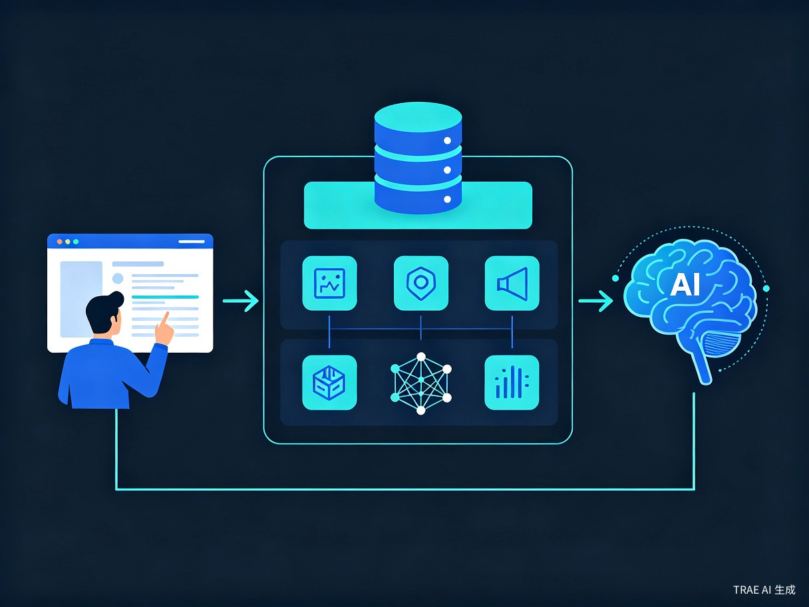

Geometry AI Server 是一个开源的 AI 中间层服务，它连接 Open WebUI 和 KIMI 大模型，在对话中注入几何论知识库和动力学规则，让 AI 能够基于几何论框架回答问题、分析文件、进行深度讨论。
它不仅是一个问答工具，更是一个会学习的教学系统 -- 你可以通过纠正 API 教它，它会记住教训，越用越准确。
直接使用通用大模型（如 KIMI、GPT、Claude）讨论几何论，会遇到以下问题：
通用模型不了解几何论的公理体系、定理和术语，回答容易偏离框架。
每次对话的回答风格和深度不同，缺乏系统性的知识引用。
模型说错了你没办法让它记住，下次还会犯同样的错。
Geometry AI Server 通过向量知识库 + 活体信息场 + 教学反馈三层机制解决这些问题。
70篇几何论文章构建为向量知识库，语义匹配而非关键词搜索，精准召回相关知识。
eta 角动力学驱动回答风格：保守简短、深度分析、创造发散、前沿探索，随对话自动演化。
通过 API 纠正错误、标记反模式、补充知识，系统自动学习，信任等级渐进提升。
自动检测低质量回复并重试，确保回答始终符合几何论框架。
上传的文件自动注入对话上下文，AI 能分析文件内容与几何论框架的符合与冲突。
AI 可自主调用 7 个工具：读写文章、管理个人数据库、查询历史对话，无需用户干预。
JSON + ChromaDB 双存储，持久化性格/感情/想法/记忆，支持语义检索和跨会话记忆。
只需 Python + ChromaDB，无需 MySQL 或其他数据库，部署简单。

用户通过 Open WebUI 发起对话，中间层在将请求转发给 KIMI API 之前，自动完成以下处理：
从 ChromaDB 向量知识库中检索与用户问题最相关的文章段落。
计算当前会话的 eta 角、语义新颖度、自指一致性等信息场状态。
将检索结果、教学纠正、文件内容、信息场状态注入 system prompt。
KIMI 回复后进行质量检测，不合格则自动重试；合格则提取关键论断存入向量库。
只需四步，即可拥有自己的几何论 AI 学习助手。
| 组件 | 角色 | 说明 |
|---|---|---|
| Open WebUI | 聊天网页界面 | 类似 ChatGPT 的对话界面，开源免费 |
| geometry_ai_server | 中间层服务 | 注入知识库和教学系统（本项目） |
| KIMI API | 大模型 | 负责生成回答，免费注册 |
打开 Open WebUI 网页 → 设置 → 模型，添加自定义模型：
| 设置项 | 值 |
|---|---|
| API Base URL | http://localhost:5000/v1 |
| API Key | 任意非空字符串 |
| 模型名称 | kimi-k2.7-code |
关闭"联网搜索"和"引用"功能，避免干扰。
为了让 AI 能够使用工具（读写文章、管理个人数据库等），需要启用 Native 模式：
Admin Panel → Settings → Models → 编辑模型 → Advanced Params → Function Calling → 选择 Native
| 工具 | 说明 |
|---|---|
list_articles |
列出文章目录中的所有文件，支持关键词过滤 |
read_article |
读取指定文章全文，支持模糊匹配文件名 |
write_article |
写入/修改文章，自动更新向量索引 |
personal_read |
读取个人数据库全部内容 |
personal_write |
写入个人数据库（性格/感情/想法/记忆） |
chat_history |
查询 Open WebUI 历史对话列表 |
chat_read |
读取指定对话的完整消息链 |
中间层提供标准 OpenAPI 3.1 规范，可被外部工具平台自动发现：
所有工具同时提供 REST API 端点，支持外部集成调用。
需要 KIMI API Key？前往 platform.moonshot.cn 免费注册，新用户有赠送额度。
这是 Geometry AI Server 最独特的功能。你可以像教学生一样纠正 AI 的错误，它会记住并改进。
纠正后，系统会在后续对话中自动注入这条纠正。随着纠正被成功应用，信任等级自动提升，高信任纠正排在更前面。
Geometry AI Server 的设计理念是：先学懂，再用好。
| 阶段 | 目标 | 系统行为 |
|---|---|---|
| 学习阶段 | 理解几何论公理体系、定理、术语 | eta 角较低，回答保守简短，侧重事实准确性 |
| 分析阶段 | 深度分析文章内容，理解定理间的关系 | eta 角升高，回答深入，展开联想和推导 |
| 探索阶段 | 提出新假设，探索几何论的边界 | eta 角高，回答创造发散，允许大胆假设 |
| 生产应用 | 基于几何论框架进行实际计算和建模 | 教学系统积累的知识确保计算符合公理约束 |
几何论提供了一套完整的数学框架（流形、算子谱、密度函数、作用量），学懂之后可以应用于物理建模、信息论、量子力学等领域。Geometry AI Server 帮你走完从"零基础"到"能应用"的全程。
| 项目 | 说明 |
|---|---|
| GitHub 仓库 | 源代码 + 预构建向量知识库 |
| Open WebUI | 聊天网页界面（pip install open-webui && open-webui serve） |
| Python 3.9+ | 运行环境 |
| flask + openai + chromadb + fastembed | 依赖包（openai 是 API 客户端库，连接 KIMI） |
| KIMI API Key | 免费注册，新用户有赠送额度 |
项目地址：https://github.com/sdoygb/geometry-ai-server
克隆后知识库已内置，配置 API Key 即可启动，无需额外准备文章。